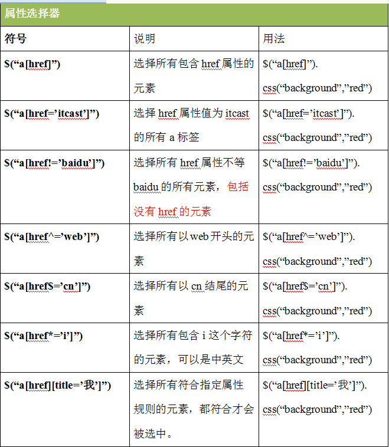

css选择器：id选择器、类选择器、标签选择器、通配符、并集选择器（，）、后代选择器（ ）、子代选择器（>）、紧邻选择器（+）
紧邻的标签p
这是标签p
jQuery选择器：基本选择器、层级选择器、过滤选择器、属性选择器
基本选择器：id 类 标签 通配符
层级选择器：子代 后代 紧邻 兄弟选择器（~）
过滤选器：:eq() :gt() :lt() :odd() :event() :first() :last()
属性选择器: